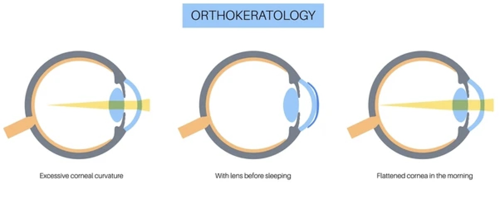

Orthokeratology (ortho-k)
Orthokeratology is a special type of rigid contact lens designed for overnight only use. Whilst they are still rigid lenses, the way they work is actually quite different, as they temporarily reshape the cornea while you sleep. This allows wearers to be glasses- and contact lens-free during the day. It gently flattens the central part of the cornea, which refocuses light to the correct plane (the retina). It corrects myopia and some astigmatism, and can also be used as a form of myopia control.
Factors suitable for ortho-k
- Myopia, commonly up to around -6.00D, and astigmatism, up to around -2.00DC
- Myopia control: ortho-k is one of the most effective ways to slow myopia progression in children1. It can also correct for some astigmatism, which is not possible with soft contact lens options, though ortho-k does generally cover a smaller overall power range.
- Lifestyle! One of the biggest benefits of ortho-k is the ability to go without glasses or contact lenses during the day. This is especially useful for people with active lifestyles.
Factors NOT suitable for ortho-k
- Hyperopia: though it can sometimes correct this, its use for hyperopic patients is quite limited
- Highly myopic or astigmatic prescriptions
- Shift work/irregular sleeping schedules
- Corneal or eyelid disease
- Optometrists will also consider the following factors when recommending these lenses:
- Dry eye, or how stable the layer of tears coating the cornea is
- Pupil size
- Motivation: ortho-k requires good compliance, care and maintenance to be safe and effective. The fitting process can also be a bit more involved, and they are generally a more expensive option.
1. Lawrenson, J. G., Shah, R., Huntjens, B., Downie, L. E., Virgili, G., Dhakal, R., ... & Walline, J. J. (2023). Interventions for myopia control in children: a living systematic review and network meta‐analysis. Cochrane Database of Systematic Reviews, (2).